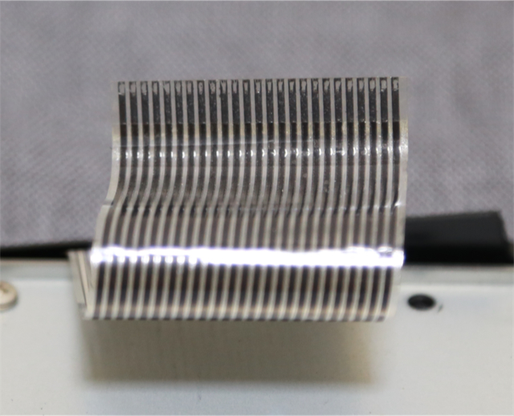
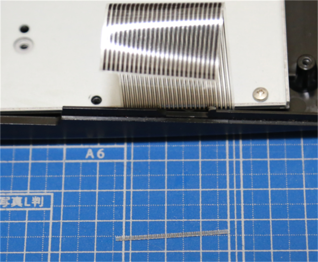
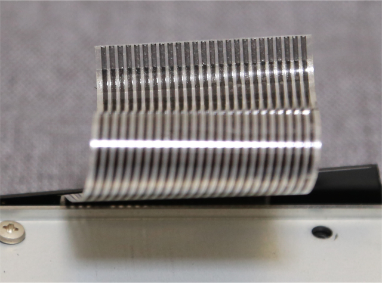

CASIO MX-101 キーボード修復 (2020年9月14日現在)
MX-101 のキーボードは、フィルム基板上に形成されており、このフィルム基板がそのまま伸びてケーブルの役割を果たし、
マザーボード上のコネクタに差し込まれています。
このケーブル部分は、S字に折り曲げられており、キーボードを固定している金属板に当たるため、保護用に透明シートが
貼り付けられています。しかしながら、1987年の発売から30年以上の月日が経過しているわけで、CASIOの設計者もまさか 2020年にもなって
MX-101を使っている人が居るとは思いもしなかったでしょう。透明シート部分は、30年持たせることは当然考慮されておらず、
透明シートの粘着材が劣化して粘着力が無くなっています。一方で貼り付けた部分の導電体（黒い配線）には染み込み、劣化させています。
結果、透明シートはちょっと動かすだけで剥がれてしまい、その部分にあった導電体をボロボロと崩してしまいます。
このS字に曲げられた部分は、直接マザーボード側の黒いコネクタに刺さっています。
このコネクタは、ラッチが付いていて、これを軽く持ち上げることでロック解除されます。
ロック解除せずに引き抜くと、ほぼ間違いなく刺さっている部分の導電体は剥がれてしまいますが、そもそも劣化しているので
ラッチを外しても、コネクタ無いの金属バネに導電体が張り付いているようで、やっぱり剥がれてしまいます。
そのため、壊れていない MX-101 (おそらく同等の構造の MX-10 も) は、むやみに分解しない方が良いです。
かなりの確率で、キーボードフィルム部分が破損して、キーボードが使用不能になります。
「中を見てみたい」とかその程度で開けない方が良いです。
すでに開けてしまって破損してしまった、とか、他の故障を修理するために開けざるを得ない、といった明確な理由が無い限りは
開けないことをお薦めします。
本記事は、何らかの理由で開けてしまって、不幸にもキーボードが使えなくなってしまった方の参考になればと思い、私の修復の過程をまとめたモノです。
はい、私はうっかり開けてしまったのです。しかも、コネクタのラッチに気がつかずに、強引に引っ張って削れてしまったのです。
一番最初、強引に引き抜いて削れた状態が下の写真です。

25本すべての導電体に四角い穴が空いている状態ですね。この状態でキーボードの効きが悪くなって気がつきました。
仕方が無いので、この先端部分をカットしたのが下の写真です。

これで一度、復活しました。

この時点で、コネクタのラッチの存在に気がついていたので、ラッチを外して挿入。ラッチをロック。
キーボードが復活したのを確認しました。しかし、まだ分解メンテをいろいろやる予定だったので、またラッチを外してケーブルを抜いてみると・・・
[次へ]